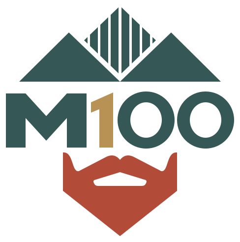
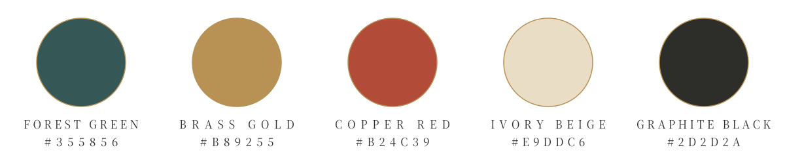
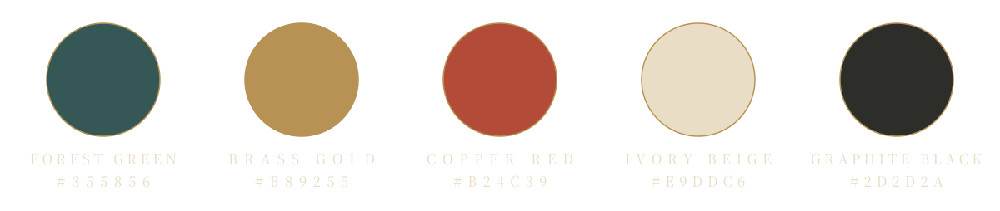

Primary logo · Standard master

Brand name selected · 5 October 2026. Read the naming decision · View naming history.
Five brand assets, with standalone inverse variants for Forest Green substrates. Measurements below each small image refer to its longest edge. Open the 1024 px view to inspect full contours.
Ivory Beige and Graphite Black backgrounds use the standard colour masters. Forest Green backgrounds use ivory foreground variants, retaining brass and copper accents. The monogram retains its green field, framed by its gold border. Transparent openings reveal the substrate; the palette always retains the five authoritative swatch colours.
Single-colour production wordmarks: Graphite · Ivory. Their contours match the colour wordmark.


